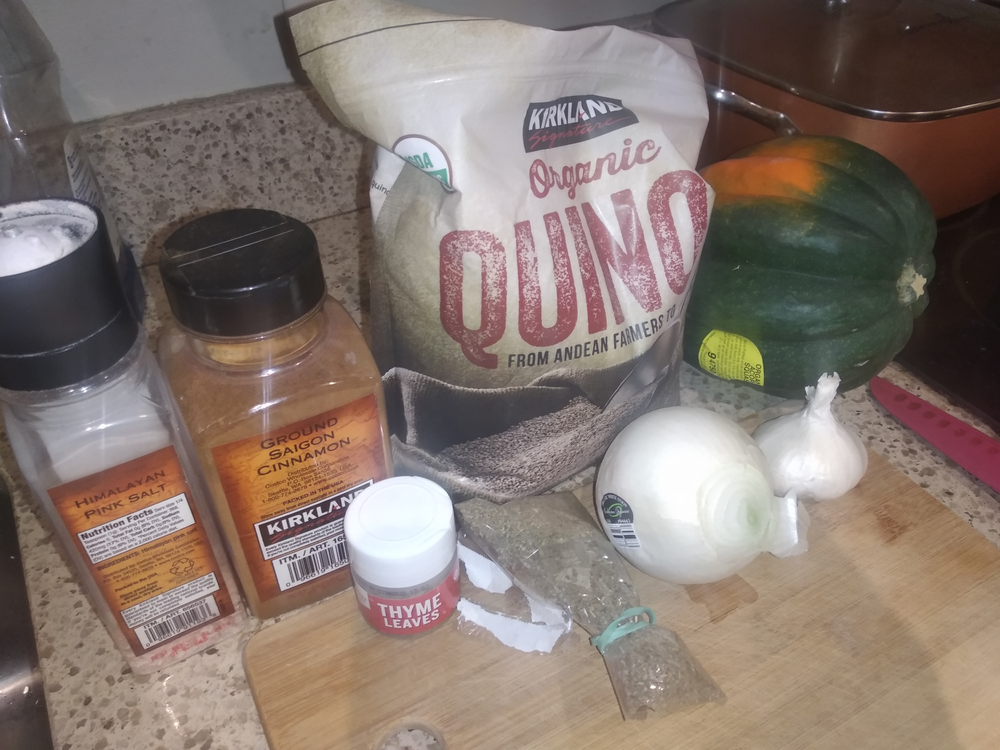
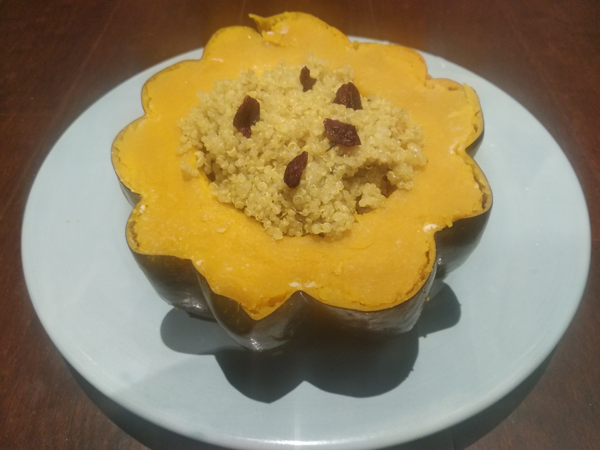

Acron squash and quinoa
 
Ingredients: * Acorn squash, 3 cups quinoa, 6 cups water or chicken stock, olive oil, onion, 3 garlic cloves, 1 tsp salt, 1 tsp rosemary, 1 tsp sage, 1 tsp thyme, parmesan cheese
Note: this will leave plenty of extra quinoa. Feel free to change the ratio of quinoa and water/stock.
How to make it: * Satue option on instant pot. Add onion, garlic, salt * Add quinoa, rosemary, sage, thyme and water or chicken stock * Cut squash and put on steamer basket inside pot * Cook 6 minutes in instant pot (with lead closed) * Optional - add cheese, cranberries, and cinnamone